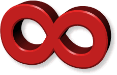

Rails Girls radionica stiže u Zagreb. Pridružite nam se na besplatnoj radionici izrade web aplikacija uz Ruby on Rails.
Tko može doći na radionicu? Radionica je namijenjena ženama bilo koje dobi koje žele naučiti programirati i raditi s web tehnologijama. Jedino što je potrebno je donijeti svoje prijenosno računalo. Istaknuli bi da je prethodna prijava na radionicu obavezna.
Mogu li se muškarci prijaviti i prisustvovati radionici? Da, ali samo u pratnji kolegice koja se već prijavila za radionicu. Ako ste muškarac i htjeli biste doći na radionicu, proslijedite informaciju o prijavama kolegici za koju mislite da bi mogla biti zainteresirana i dođite u društvu!
Tko organizira Rails Girls Zagreb? Glavna organizatorica dvodnevne radionice je Lucija Gregov, programerka u tvrtki minus5 s namjerom da približi programiranje i tehnologiju djevojkama i ženama u Hrvatskoj. U tome joj pomažu drugi iskusni programeri i programerke koji će volontirati kao mentori odnosno mentorice na našoj radionici, te suorganizatori i partneri.
Gdje će se radionica održati? Hrvatska Gospodarska Komora - Trešnjevka, Nova Cesta 5 (iznad Lidla), Zagreb
Ukoliko biste se voljele okušati u izradi web aplikacija te imate svoje prijenosno računalo, bit će nam zadovoljstvo uvesti vas u zabavan svijet programiranja. Dobrodošli ste i ako već znate programirati u Rubyu, a htjeli biste prisustvovati na našoj radionici i osvježiti znanje.
Rails Girls is coming to Zagreb, Croatia on 19 - 20th October 2012: join the two-day crash-course to the exciting world of building web applications with Ruby on Rails.
Naučit ćete kako izgleda razvoj aplikacija uz Ruby on Rails i neke osnove web tehnologija.
Treba vam vlastito prijenosno računalo, znatiželja i malo mašte!
Želite nam pomoći? Tražimo dodatne sponzore koji bi htjeli poduprijeti uključenje žena u IT industriju. Kontaktirajte nas.
| 17:45 - 18:00 |
Arrival of attendees and coachesWe will use this time to make sure everyone has arrived, and to make ourselves comfortable, so we don't lose time later. |
|---|---|
| 18:00 - 21:00 |
Install festGet to know the attendees a little bit before we start the workshop. Bring your laptop, so we can install Ruby on Rails for you. |
| 21.00 |
Coach dinnerAll of the coaches are welcome to our coach dinner, where we'll go through the program for the next day. |
| 9:00 - 10:00 |
Registration, coffee and beginning of the workshopDuring the morning we’ll drink some coffee and prepare to start with our workshop. |
|---|---|
| 10:00 - 10:15 |
WelcomeOutline of the day & word from sponsors |
10:20 - 10:45 |
Designing your web app - workshop |
| 10:50 - 11:10 |
Tryruby.orgLet's get coding! |
| 11:10 - 13:00 |
WORKSHOPJumpstart your first web application |
| 13:00 - 13:30 | Lunch |
| 13:30- 13:45 |
Bentobox - Understanding Web AppsRecap of what we’ve learned and how it all fits together. |
| 13:45 - 14:30 |
Lightning talks from coaches |
| 14:30 - 16:30 |
WORKSHOPExtend your application. |
| 20:00 |
AfterpartyOpen for everyone! Meet cool people interested in tech.Location: The Movie Pub (stražnji dio kluba u prizemlju), Savska 141. |
Rails Girls Zagreb is co-organized with our awesome partners.
minus5 is a Software development and IT Security consultancy company. Software development includes several project for companies like betting house Supersport, Croatian Telecom (T-COM), 3D-simulations for companies that sell military equipment etc. IT Security consultancy is targeted mainly on banks and insurance companies.
 Infinum is a company specialised in designing and developing great software for mobile and web devices. Infinum is an established name for mobile and web development in the region, with offices in Croatia and Slovenia, a team of 22 people, over 60 mobile applications built and a client list that includes large regional and international companies and brands. Infinum has been awarded a number of awards for mobile development, including the 1st in category prize from the Samsung Global Developer Challenge with a $100.000 cash prize. Technologies we specialize in include iOS, Android, Ruby on Rails and HTML5.
Croatia Girl Geek Dinners is a community for females who class themselves as geeky. Girl Geek Dinners bring together Girl Geeks from Croatia with a common goal of meet, inspire & encourage!
Croatian Chamber of Economy is an institution with a century and a half of rich heritage that is determined to create a new and successful economic future for Croatia.Rappa Designo is a company specialized in design, marketing, branding, graphic and industrial design. Rappa’s synonyms are reliability and creativity. Some of the companies we have cooperated with are Pliva, Croatia Bosch, UNDP Croatia, Nuk Germany, Biofar, Pharmanatura, INA, Reckitt Benckiser, Lerbolario, Upi2m, Faculty of Electrical Engineering and Computer Science. We make your life happier since 2007.
ACT Printlab is a not-for-private-profit social enterprise, graphic and web design studio, which provides professional, high-quality, innovative products and services which meet the needs of its partners (civil society organizations, social enterprises ... and the community).